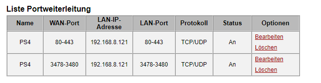

Ich habe den My HomeNet LTE Turbo Vertrag mit dem Huawei B529s-23a Router. Auf dem PC läuft alles perfekt, und dort habe ich auch einen Download von 25 - 35 mb/s beim Speedtest. Jedoch beim Speedtest von der PS4 habe ich nur einen Download von 0.5 - 2 mb/s, womit es unmöglich ist etwas zu Spielen. Es sind beide über WLAN verbunden. Ich habe auch schon versucht die PS4 über LAN mit dem Router zu verbinden, und dann funktioniert es auch, jedoch kann ich den Router nicht immer bei der PS4 lassen, da sonst im Rest der Wohnung kein Internet ist. Es muss doch sicher noch eine Lösung dafür geben.
Danke im Vorraus.
MarioM
vor 57 Minuten schrieb CTexx:
Ich habe auch schon versucht die PS4 über LAN mit dem Router zu verbinden, und dann funktioniert es auch, jedoch kann ich den Router nicht immer bei der PS4 lassen,
D.h über LAN funktioniert alles ohne Probleme?
Wie weit steht denn die PS4 weg vom Router? Sind da eventuell dicke Wände dazwischen?
Liebe Grüße
CTexx
Ja über LAN funktioniert es ohne Probleme.
Die Ps4 ist genau gleich weit vom Router entfernt, wie mein PC, und beim PC funktioniert es perfekt wie gesagt.
Ports fungieren als Endpunkte zwischen zwei Verbindungen. Durch die Freigabe der spezifischen PSN-Ports wird der Datenverkehr zwischen deiner PS4 und dem PlayStation Network erleichtert.
ACHTUNG: Falls du dir nicht sicher bist, was das bedeutet, oder nicht weißt, wie du die Ports an deinem Router freigibst, solltest du dich unbedingt an deinen Internetanbieter oder den Hersteller des Routers wenden, bevor du Änderungen an den Routereinstellungen vornimmst.
Gib die folgenden Ports an deinem Router frei und sag uns dann Bescheid, ob das Problem dadurch behoben werden konnte.
TCP: 80, 443, 3478, 3479, 3480
UDP: 3478, 3479
Vielleicht hilft dir das weiter?
Hast du schon mal probiert den PC aus dem WLAN zu nehmen und nur die PS drinnen zu lassen?
Liebe Grüße
CTexx
Das mit dem Portforward habe ich versucht. Jedoch wenn ich bei Wan - Port 80 - 3480 eingebe, bekomme ich die Meldung "Der WAN-Port darf nicht 68, 1701 lauten.". Deswegen habe ich es in 2 aufgeteilt. Ist das, so wie im folgenden Screenshot, richtig?

MarioM
Sieht soweit mal gut aus. Hat das auch geholfen? Hast du es schon testen können?
CTexx
Getestet habe ich es, jedoch hat das auch nichts gebracht. Mein Nat-Typ müsste dann ja auch "offen" sein oder? Was bei meiner Ps4 nicht der Fall ist. Da habe ich auch immer noch Nat Typ 2.
MarioM
Dann müsstest du eventuell auch noch den APN auf Business umstellen, damit sich der NAT Typ ändert.
Wobei das normal den Speed nicht beeinflussen sollte.
Eventuell ist der Wifi Chip der PS4 dermaßen schlecht? Hast du schon mal die PS4 direkt neben den Router gestellt?
Bearbeitet
von MarioM
IT-Freak
Nat2 passt. Nat 1 wirst du nicht bekommen. Apn müsste auf Business gestellt sein.
CTexx
APN habe ich auf Business gestellt. Aber das ist auch nicht so wichtig.
Mir ist nur wichtig, dass die Geschwindigkeit der PS4 besser wird.
Ich habe jetzt den Router direkt neben die PS4 gestellt, und das hat es nicht verbessert.
Bearbeitet
von CTexx
MarioM
vor 1 Minute schrieb CTexx:
Ich habe jetzt den Router direkt neben die PS4 gestellt, und das hat es nicht verbessert.
Dann liegts eventuell aber wirklich an der PS4 - man liest nicht unbedingt gute Dinge über die WLAN Chip der verbaut ist.
CTexx
Meine Freunde benutzen die PS4 ja auch über WLAN und bei ihnen läuft es einwandfrei. Es kann doch nicht sein, dass der WLAN Chip bei mir nur 500kb empfängt. Es sind 1 Wand und zirka 5 Meter dazwischen.
MarioM
vor 2 Minuten schrieb CTexx:
Meine Freunde benutzen die PS4 ja auch über WLAN und bei ihnen läuft es einwandfrei. Es kann doch nicht sein, dass der WLAN Chip bei mir nur 500kb empfängt. Es sind 1 Wand und zirka 5 Meter dazwischen.
Naja, wenns eine Stahlbetonwand ist, kann das ganz leicht sein
CTexx
Ist es nicht ^^
CTexx
Hast du sonst noch irgendwelche Tipps?
Oder würde vielleicht ein WLAN- Verstärker helfen? Wenn ja, könntest du einen empfehlen?
IT-Freak
Ethernet / LAN Kabel.
Und sei es nur zum testen. Es ist deutlich billiger als ein repeater jedoch deutlich leistungsfähiger und stabiler.
CTexx
Das Problem ist wie gesagt, dass der Router im Gang steht, und ich kein Kabel durch die Wohnung legen kann ...
MarioM
vor 47 Minuten schrieb CTexx:
Hast du sonst noch irgendwelche Tipps?
Oder würde vielleicht ein WLAN- Verstärker helfen? Wenn ja, könntest du einen empfehlen?
Du kannst einen Repeater probieren. Ich hab immer die Geräte von Asus gerne.
Kannst du mit dem Handy ins WLAN? Und schauen ob der Speed genauso gut ist, wie mit dem PC?
CTexx
Hab jetzt mit dem Handy den Speedtest gemacht, und ich habe komischerweise doppelt so viel Upload wie Download.
Der Upload ist gleich wie beim PC und der Download ist viel schlechter.
Bearbeitet
von CTexx
IT-Freak
vor 34 Minuten schrieb CTexx:
Das Problem ist wie gesagt, dass der Router im Gang steht, und ich kein Kabel durch die Wohnung legen kann ...
Nicht einmal temporär?
CTexx
vor 2 Minuten schrieb IT-Freak:
Nicht einmal temporär?
Wenn es sonst keine Lösung gibt, werde ich es so machen müssen ...
MarioM
vor 11 Stunden schrieb CTexx:
Hab jetzt mit dem Handy den Speedtest gemacht, und ich habe komischerweise doppelt so viel Upload wie Download.
Der Upload ist gleich wie beim PC und der Download ist viel schlechter.
Das könnte natürlich auch an der Uhrzeit liegen und daran, dass Wochenende ist?
NED
vor 13 Stunden schrieb CTexx:
Das Problem ist wie gesagt, dass der Router im Gang steht, und ich kein Kabel durch die Wohnung legen kann ...
Ich habe auch den Router umstellen müssen (Hybrid), habe bei meinem PC für LAN eine Lösung gebraucht und habe mich für den Repeater entschieden. So wie ich das sehe, könne es auch für dich eine Lösung sein. Entweder du kannst den Router zur Xbox stellen und den Repeater dann in einen anderen Teil der Wohnung, somit wärst du überall versorgt oder du lasst den Router wo er ist, hängst deine Xbox per LAN an den Repeater und umgehst hier auch das mögliche WLAN Problem der Xbox. Der Vorteil des Repeaters ist, dass du hier gleich mehrere Varianten ausprobieren kannst, denn so wie ich das lese, könnte es ja auch noch sein, dass du im Wohnzimmer neben der Xbox einfache einen besseren Empfang hast und im Grunde der Router da am besten aufgehoben ist.
Den habe ich in Verwendung, aber es gibt genügend Modelle da draußen. Dieser ist günstig und recht gut einstellbar - reicht meiner Meinung nach auch vollkommen für den privaten Zweck.
wenn du in einer Wohnung bist, wäre es da möglich, dass sich wlan Kanäle überschneiden?
da gibt es eine einfache app zur Überprüfung. such mal im AppStore nach wifi analyser, wechsle zur Kanalansicht und poste bitte einen Screenshot, eventuell zensiert von deiner wlan Umgebung.
da gibt es eine einfache app zur Überprüfung. such mal im AppStore nach wifi analyser, wechsle zur Kanalansicht und poste bitte einen Screenshot, eventuell zensiert von deiner wlan Umgebung.
Das habe ich jetzt gemacht. Mein W-Lan ist das rote im Screenshot. Also wenn ich es richtig verstehe bin ich jetzt über Kanal 8 verbunden, oder?
Den habe ich in Verwendung, aber es gibt genügend Modelle da draußen. Dieser ist günstig und recht gut einstellbar - reicht meiner Meinung nach auch vollkommen für den privaten Zweck.
Wenn sonst nichts hilft, werde ich mir den wahrscheinlich bestellen. Danke!
CTexx
Ich habe den My HomeNet LTE Turbo Vertrag mit dem Huawei B529s-23a Router. Auf dem PC läuft alles perfekt, und dort habe ich auch einen Download von 25 - 35 mb/s beim Speedtest. Jedoch beim Speedtest von der PS4 habe ich nur einen Download von 0.5 - 2 mb/s, womit es unmöglich ist etwas zu Spielen. Es sind beide über WLAN verbunden. Ich habe auch schon versucht die PS4 über LAN mit dem Router zu verbinden, und dann funktioniert es auch, jedoch kann ich den Router nicht immer bei der PS4 lassen, da sonst im Rest der Wohnung kein Internet ist. Es muss doch sicher noch eine Lösung dafür geben.
Danke im Vorraus.
IT-Freak
Setze die Kanalbreite auf 20 MHz herunter und nimm Kanal 11.
Das ist ganz komisch ... Manchmal habe ich jetzt beim Verbindungstest auf der PS4 30mb/s Download, und dann ne halbe Stunde später wieder nur 500kb/s. Langsam bin ich echt am verzweifeln.
SigiBlue
hast du die kanaländerung gemacht?
ps4 und modem mal für ein paar sekunden stromlos gemacht?
kannst du der ps4 eine statische ip zuweisen (gibt es womöglich einen ip-adressen konflikt?)
CTexx
Kanaländerung habe ich gemacht. Wlan-Bandbreite auf 20mhz und Kanal auf 11.
Ps4 und Modem habe ich auch für 5 Minuten stromlos gemacht.
Ja, kann ich. Aber was für eine?
SigiBlue
Eine außerhalb vom DHCP-IP Bereich. Den siehst du normalerweise auf der Weboberfläche.
Bei mir ist der zwischen 192.168.8.100 und 192.168.8.200. Also würde ich z.b 192.168.8.50 nehmen können,
sofern die nicht bereits belegt ist. Sinngemäß also auf deine Einstellungen übernehmen.
CTexx
Das habe ich auch gemacht. Gebracht hats jedoch auch nichts ... Ich habe immernoch diese Schwankungen.
SigiBlue
hmmm, gibts irgendwie die ps4 mal bei einem deiner freunde zu testen, von denen du gesprochen hast um die auszuschließen.?

{kind=link}
{kind=link}
{kind=link}